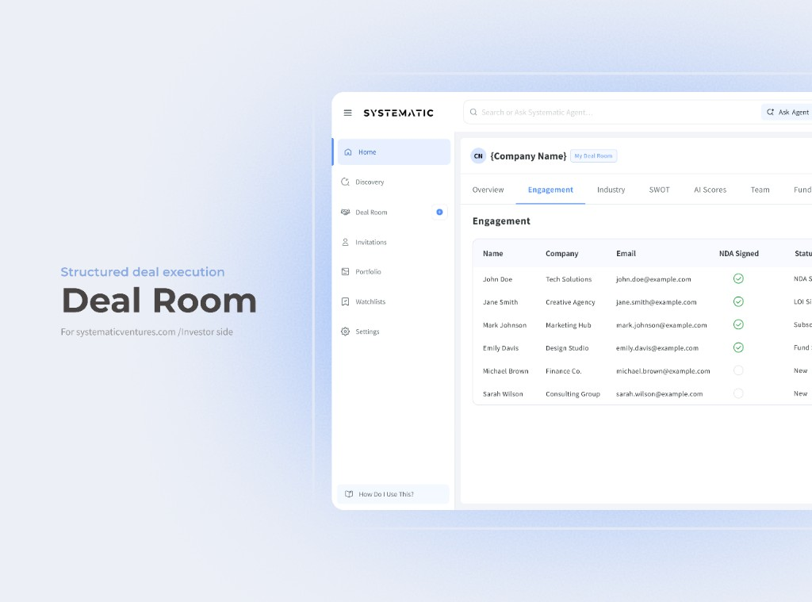
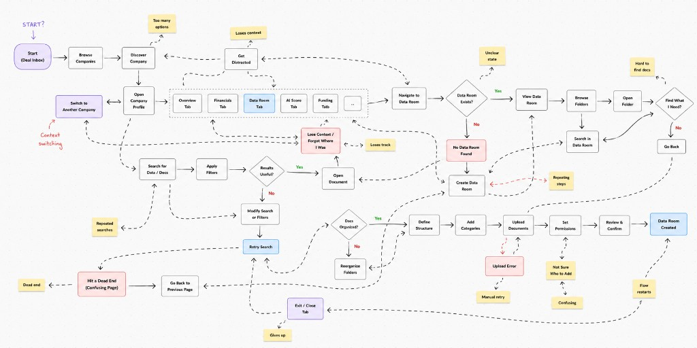
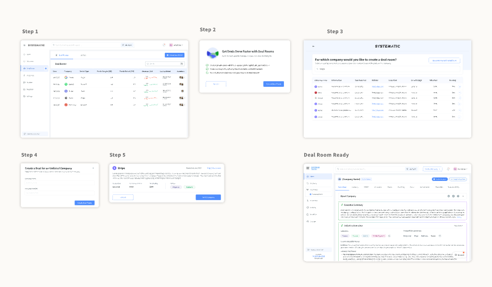
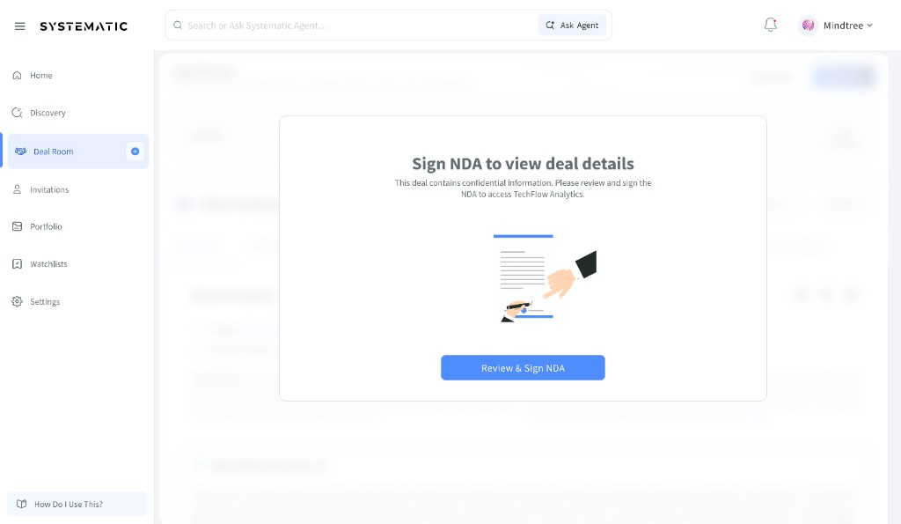
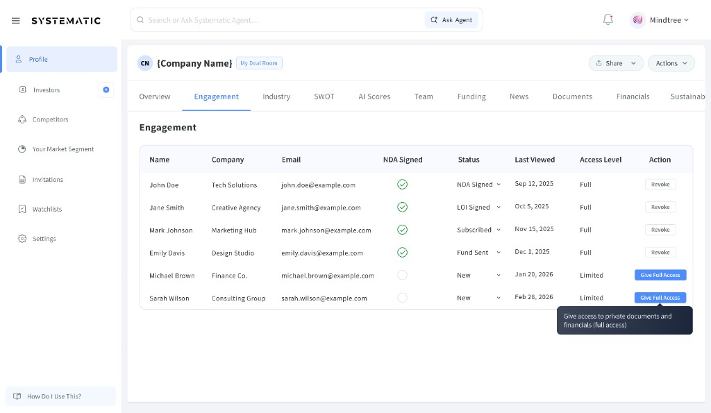

People stalled when the next gate was unclear—not when features were missing.
Deal Room
Designing a guided investment workflow—so founders and investors move from intent to commitment inside one structured path, not across scattered tools.

Deal interest existed. A reliable path to commitment did not.
Founders and investors already had profiles, documents, NDAs, and conversations—but they lived in email, Drive, WhatsApp, and disconnected product surfaces. Momentum died between tools, not from lack of intent.
Fundraising broke outside the product—exactly when trust should compound.
The workflow looked like progress, but every handoff reintroduced uncertainty:
- Deal creation buried away from the company profile—where intent already lived
- NDAs, documents, and permissions scattered across email and drive
- No single answer to who viewed, signed, downloaded, or showed interest
- Founders repeating the same context across calls and threads

Users didn’t need more destinations. They needed one source of truth for status.
Creation entry points away from the profile forced rediscovery of context.
Founders couldn’t see who engaged, signed, or progressed—so follow-ups stayed manual.
Persona: Founder · clear next action under pressure
Persona: Investor · trust through structured gates
Two incomplete paths kept showing up in critiques.
Option A
Add more deal dashboard widgets and status labels on top of the existing sprawl.
Option B
Ship a standalone Deal Room object disconnected from the company profile.
→ More status without a guided path still confuses. A room without profile context still forces context switching.
We didn’t add another destination. We anchored deal execution where intent already lives—the company profile.
The system became a visible ladder of commitment:
- Setup: create the room from the profile with shared context
- NDA: confidentiality as a product gate, not an email attachment
- Commitments: documents, access, and interest tracked in one flow
Four systems that turned fragmented fundraising into guided execution.
Profile-anchored entry
“Create Deal Room” lives where fundraising intent already exists—so context travels with the action.
Guided gates
Setup → NDA → Commitments as a visible ladder, not hidden states buried in navigation.
In-product confidentiality
NDA review and signing stay inside the deal path so access unlocks without leaving the product.
Progress visibility
Dashboards surface who viewed, signed, downloaded, and showed interest—so follow-ups become intentional.

From chaotic multi-tool paths to a single commitment ladder.
Before
Company profile → email → financials → NDA → calls → decision—everything disconnected.
NDA as a product gate
Confidentiality moved into a structured sequence—select, review, sign, unlock—without leaving Deal Room.

Select for deal
Review & sign
Signed success
Access unlock
Progress dashboard
Activity and engagement became legible—so teams could act on real interest instead of guessing.

Clarity at each gate—without burying the next action.
- Progressive disclosure shows only what’s actionable for the current stage.
- NDA states communicate lock vs unlock without dumping legal UI all at once.
- Engagement signals surface in the same room where documents and discussions live.

Measured outcomes after launch
Deal creation adoption after anchoring entry to the company profile.
Discovery-to-action friction across the guided commitment path.
Fewer dead ends between interest, NDA, and investor commitment.
- Entry points beat dashboards when intent already lives somewhere else.
- Gates create trust when they’re visible—not when they’re legal afterthoughts.
- Status is only useful if it answers “what do I do next?”
Led research synthesis, IA, flow design, UI, and handoff for Deal Room—working with product, engineering, and legal on gated commitment paths and adoption metrics.
Collaboration: Partnered tightly on NDA sequencing, permission models, and dashboard definitions so progress stayed measurable after ship.
Where this product can go next
- Deeper investor interest signals tied to follow-up playbooks.
- Reusable gate patterns across deal types for faster team learning.
- Stronger founder coaching moments when a gate stalls.